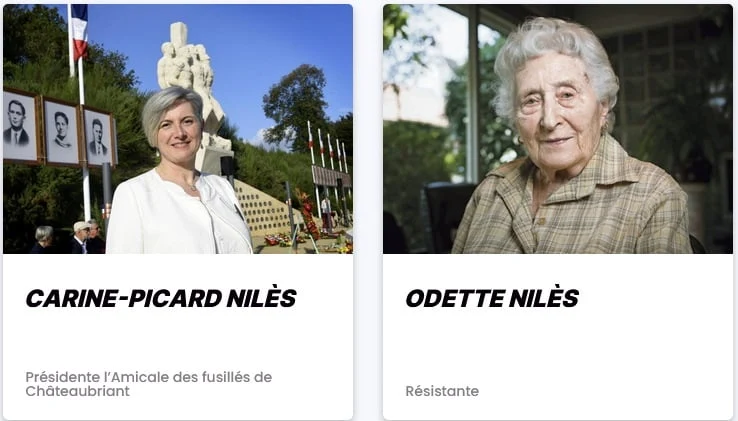

Publication de campagne
Carine Picard-Nilès et Odette Nilès soutiennent Fabien Roussel
Date indiquée par Facebook · 31 mars 2022
Repères éditoriaux
Nous avons relayé leur soutien lors de la campagne des Jours heureux. La légende identifie Carine Picard-Nilès et Odette Nilès, ancienne résistante.
Texte conservé avec la publication
Campagne des Jours heureux
Elles soutiennent Fabien Roussel
Carine Picard-Nilès, présidente de l'Amicale Chateaubriant-Voves-Rouillé-Aincourt
Odette Nilès, ancienne résistante, petite amie de Guy Moquet

Sources
Archive rouge · export Facebook · AR-0002-FB-01911
À lire aussi · Fabien Roussel à Marseille. Redistribuer pour vivre et financer les services publics · Le lien d’origine